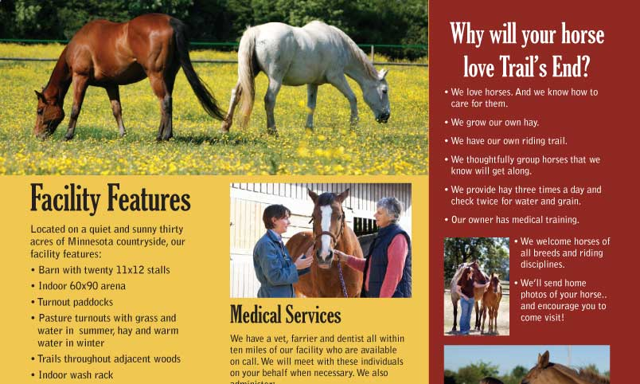
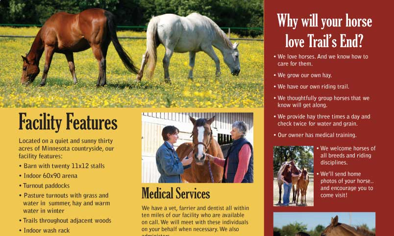

Brenna Scurlock
brennascurlock [at] gmail [dot] com
Design Projects
 


- Google documents tutorial
- As part of an instructional design course, I created this short lesson on how to use the documents feature of Gmail. The lesson teaches users how to access Google docs, create new Google docs, store Google docs and files, and share Google docs and files with others.
- View full lesson
- Trifold Color Brochure
- As part of a document design course, I created this full-color trifold brochure. The client was a fictional horse rehabilitation and retirement farm in Minnesota. Photos and content were provided by the instructor; design decisions were entirely up to the students.
- View Full Version (PDF)
- Bridges to a New Day newsletter
- Toward the end of 2008, I began to volunteer my time as an office worker at Bridges to a New Day, a small but ambitious domestic violence advocacy and counseling agency in Lockport, IL.
- Soon, I was given the unique opportunity to help this agency develop its media presence and increase PR efforts. One of my projects was the design and development of a seasonal newsletter. My purpose with this project was to create something that was more visually appealing than its predecessor but that still retained a look familiar to long-time supporters. All feedback so far has been very positive.
- A full, PDF version of the newsletter can be viewed by following the link below.
- View Full Version (PDF)
Published Articles
- Roots Grow Deep at Corn Stock Theatre
- From art and society
- Nestled in the lush foliage of upper Bradley Park, Corn Stock Theatre offers local thespians and theater patrons alike a creative outlet, a source of entertainment and a strong sense of community. Peoria's only outdoor theater provides a tranquil viewing ambiance that makes it the "prettiest place to see theater in the area," according to business manager Cindy Hoey. With a league of dedicated volunteers and a venue unlike any other, Corn Stock Theatre serves as a truly unique example of local, independent theater.
- Read More
- How to Date on a Budget
- From the Bradley Scout
- Dinner and a movie: couples have been going on this classic date since motion pictures first premiered. This traditional outing covers all the dating bases – food, entertainment and time spent together. But with rising restaurant and theater costs, young couples need to be more creative with their courtship so as not to break the bank with every rendezvous.
- Read More
- Pouch takes the Ouch out of Recovery
- From The Peoria Woman
- With a little fabric, some thread, a lot of creativity and even more generosity, sewers across the country will band together in 2008 in a national effort to produce thousands of pain-relieving pouches that originated right here in Peoria.
- Read More